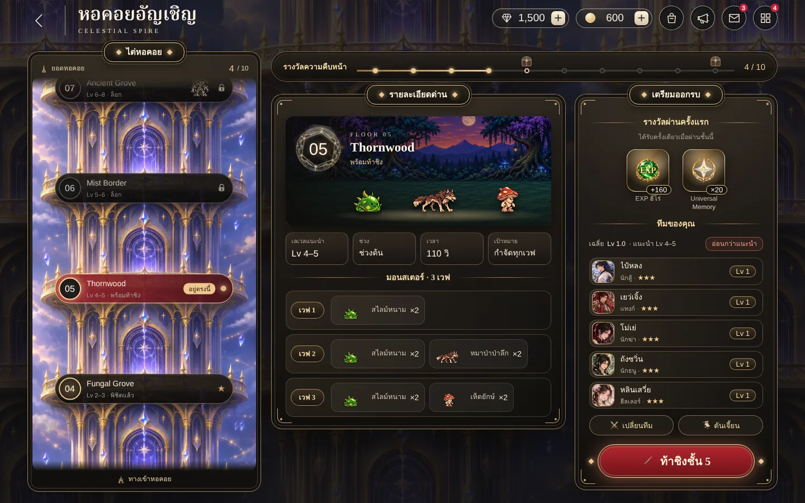
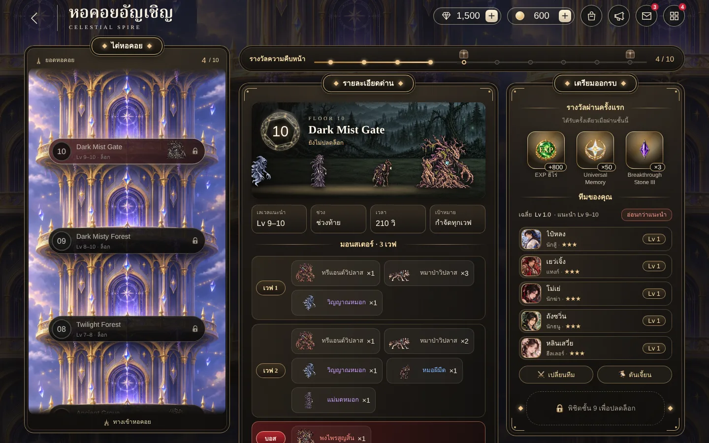
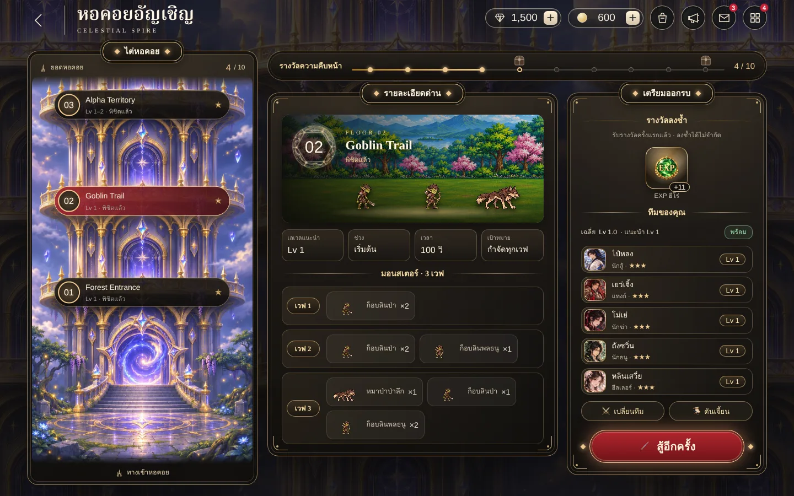
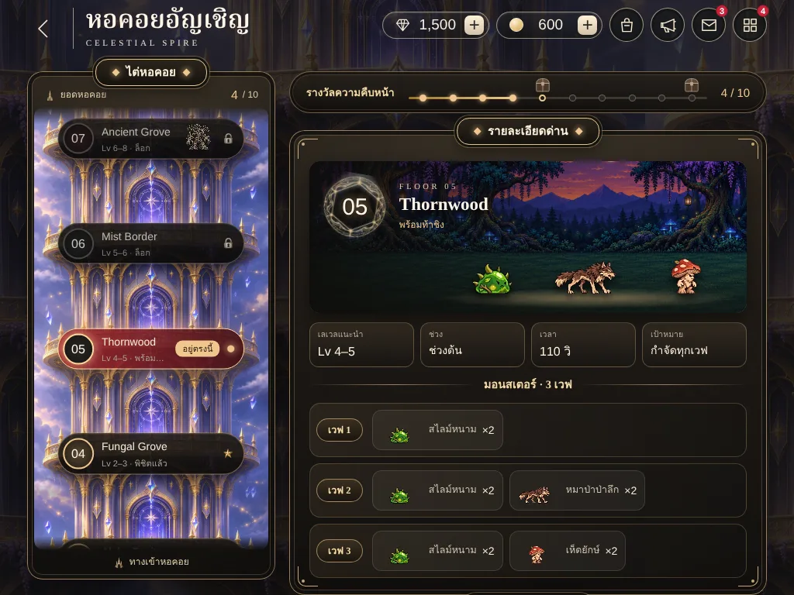

1440 · next floor (F5)

1440 · locked boss floor (F10)

1440 · cleared floor shows repeat rewards (F2), climb scrolled to the warp entrance

1024 · battle prep panel stacks under the floor detail
